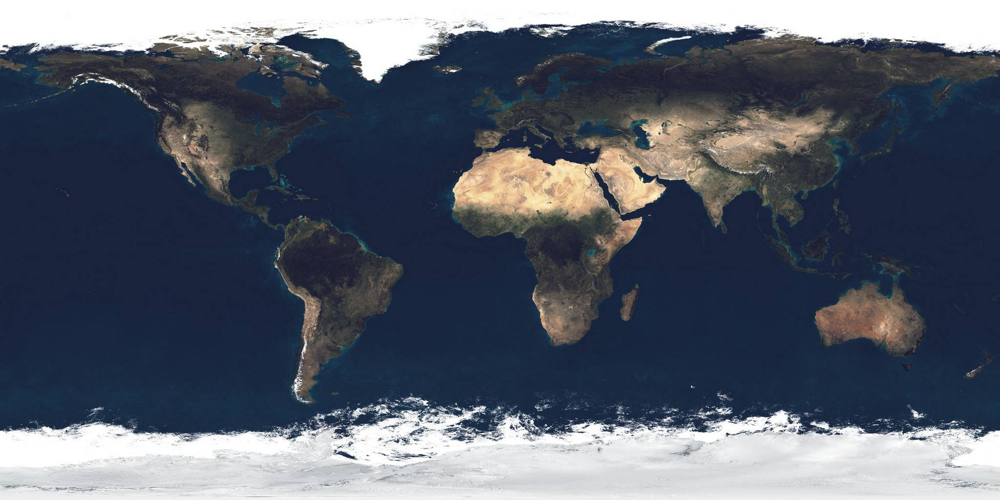

Paper Planet puts news where it happens. Every figure on the globe is one story, standing where it happened. Open it for a short summary, a few numbers and a link to the source.
The edition rebuilds every three hours from GDELT events and publishers’ page metadata. Headlines and summaries are the publishers’ own; no AI writes them. Colour shows what the story means for the people in it — urgent when people are harmed or in danger, good when something measurably improved, neutral for everything else — never approval.
News data: The GDELT Project. Geography: Natural Earth via world-atlas. Map projection: D3. Earth texture: three.js examples (MIT). News belongs to its publishers.